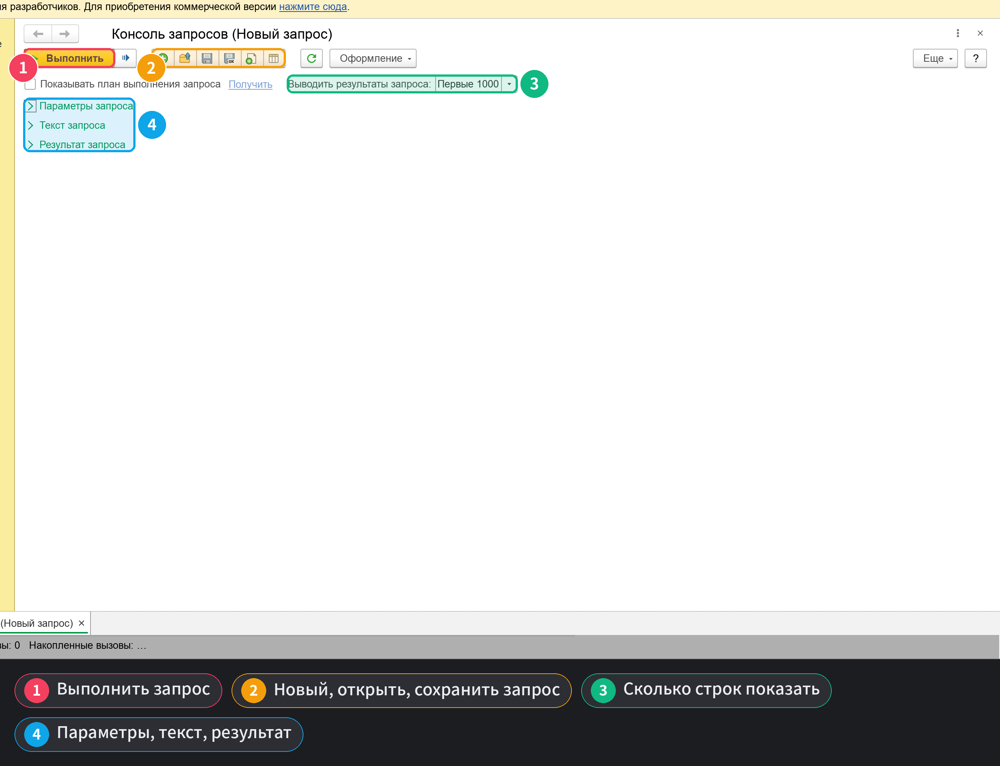
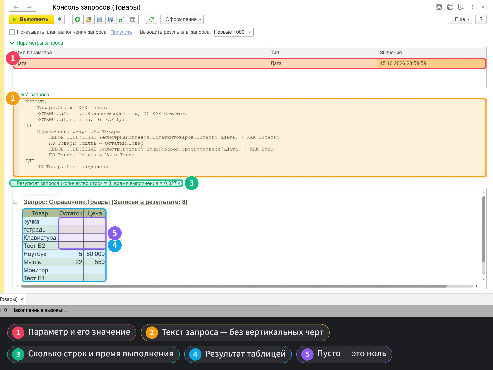
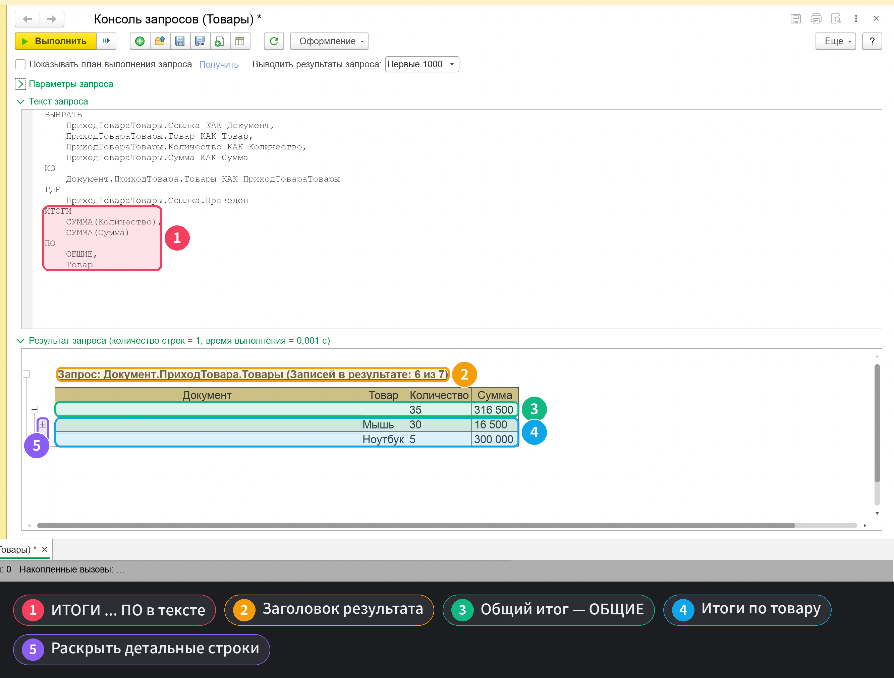
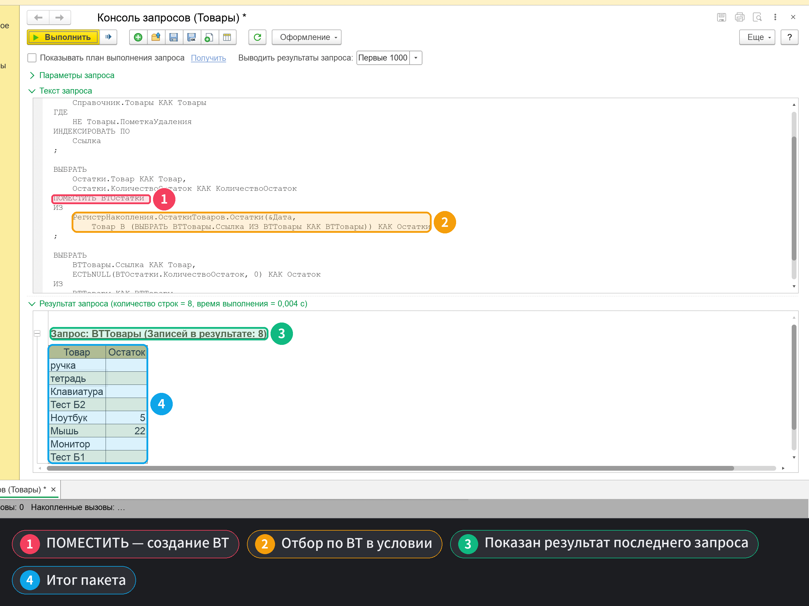
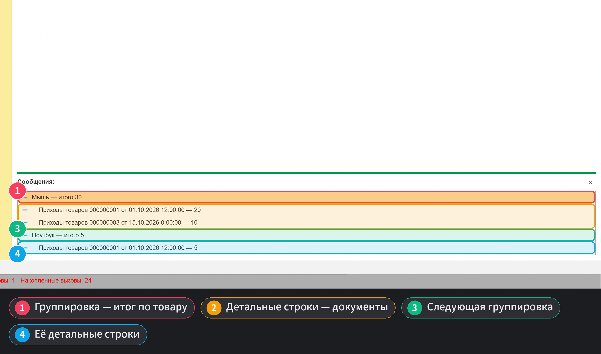

1. Что это, зачем, где найти
Консоль запросов
Что это. Внешняя обработка — файл .epf. Открываешь её в 1С:Предприятии, пишешь текст запроса, нажимаешь «Выполнить» и сразу видишь результат таблицей. Никакого кода, никаких перезапусков.
Зачем.
- Отладка запроса: выполнил, посмотрел, поправил — за секунды, без запуска своего кода.
- Проверка данных: «почему в отчёте не та сумма?» — запрос в консоли, и сразу видно, откуда цифра.
- Быстрые ответы: «сколько документов за месяц?», «у каких товаров нет цены?».
На работе консоль открыта почти всегда.
Где взять. В конфигурации её нет — это отдельный файл:
- официальная консоль от 1С — на ИТС, в разделе универсальных обработок. На работе доступ к ИТС обычно есть;
- консоли сообщества — на Инфостарте и GitHub, среди них есть с подсветкой синтаксиса.
Как открыть. В 1С:Предприятии главное меню (☰) → «Файл» → «Открыть…» → выбрать файл .epf.
Обход результата
Что это. То, что делаешь с результатом запроса в коде: перебираешь строки, выгружаешь в таблицу, проверяешь, есть ли данные, проходишь по итогам.
2. Консоль: как работать
Окно консоли

| № | Что это |
|---|---|
| 1 | «Выполнить» — выполнить запрос |
| 2 | Новый запрос, открыть и сохранить — запросы можно хранить в файле и возвращаться к ним |
| 3 | Сколько строк результата показать. Для больших таблиц — защита от зависания |
| 4 | Три раздела: параметры, текст, результат. Раскрываются по клику |
Выполнить запрос с параметром
- Раскрой «Текст запроса» и вставь текст.
- Раскрой «Параметры запроса» — параметры из текста появятся сами. Если нет — обнови список кнопкой с зелёной стрелкой.
- Впиши значения параметров.
- «Выполнить».

| № | Что это |
|---|---|
| 1 | Параметр Дата и его значение |
| 2 | Текст запроса. Чистый текст, без вертикальных черт и удвоенных кавычек, как в коде |
| 3 | Сколько строк вернулось и сколько выполнялся запрос |
| 4 | Результат таблицей |
| 5 | Пустые клетки — это нули: консоль не показывает 0. Здесь их подставил ЕСТЬNULL |
Как перенести запрос из кода в консоль и обратно
| Направление | Что сделать с текстом |
|---|---|
| Из кода → в консоль | Убрать вертикальные черты в начале строк, удвоенные кавычки "" заменить на одинарные " |
| Из консоли → в код | Открыть конструктор запроса в коде и вставить текст в него — он сам расставит черты |
Как удобнее работать. В официальной консоли нет подсветки. Пиши и правь запрос в EDT — там подсветка, подсказки и конструктор, — а в консоль только вставляй и выполняй.
Итоги в консоли
Если в запросе есть ИТОГИ, консоль показывает результат деревом:

| № | Что это |
|---|---|
| 1 | ИТОГИ ... ПО ОБЩИЕ, Товар в тексте запроса |
| 2 | Заголовок результата: таблица запроса и сколько записей показано |
| 3 | Общий итог — строка от ОБЩИЕ. По всем строкам: 35 штук |
| 4 | Итоги по каждому товару: мышь 30, ноутбук 5 |
| 5 | Плюсик — раскрыть детальные строки: документы прихода этого товара |
Пакет в консоли

| № | Что это |
|---|---|
| 1 | ПОМЕСТИТЬ — один из запросов, создающих временную таблицу |
| 2 | Отбор по временной таблице в условии виртуальной таблицы |
| 3 | Консоль показывает результат последнего запроса пакета |
| 4 | Итог пакета: все товары с остатком |
3. Результат запроса в коде
Запрос.Выполнить() возвращает объект РезультатЗапроса. С ним можно сделать четыре вещи:
| Метод | Что делает | Когда |
|---|---|---|
Пустой() |
Истина, если строк нет | Перед обработкой: нет данных — нечего делать |
Выбрать() |
Выборка — проход по строкам, одна за другой | Один проход по данным: вывести, записать, посчитать |
Выгрузить() |
Таблица значений — все строки в памяти сразу | Нужно сортировать, искать, вернуть из функции, передать на форму |
Колонки |
Список колонок результата | Редко — для универсального кода |
Пустой
Результат = Запрос.Выполнить();
Если Результат.Пустой() Тогда
Вывести("Данных нет");
Возврат;
КонецЕсли;
Проверка дешёвая и избавляет от пустых циклов и пустых отчётов.
Выбрать или Выгрузить
Выбрать() |
Выгрузить() |
|
|---|---|---|
| Что получаешь | Выборку: строки по одной | Таблицу значений: все строки сразу |
| Память | Мало — держит одну строку | Много — держит всё |
| Сколько проходов | Один. Нужен второй — Выборка.Сбросить() |
Сколько угодно |
| Сортировка, поиск | Нет | Есть: Сортировать, Найти, НайтиСтроки |
| Вернуть из функции | Неудобно | Да |
Правило: один проход — Выбрать(). Нужна таблица как объект — Выгрузить(). Сотни тысяч строк — только Выбрать(), иначе можно исчерпать память.
Выборка
Выборка = Результат.Выбрать();
Пока Выборка.Следующий() Цикл
Вывести(СтрШаблон("%1 — %2", Выборка.Товар, Выборка.Остаток));
КонецЦикла;
| Что | Как |
|---|---|
| Следующая строка | Выборка.Следующий() — Ложь, когда строки кончились |
| Значение поля | Выборка.ИмяПоля — по псевдониму из ВЫБРАТЬ |
| Сколько строк | Выборка.Количество() |
| Пройти заново | Выборка.Сбросить() |
4. Обход по группировкам
Зачем
Если в запросе есть ИТОГИ, результат — это дерево: итог по товару, под ним — детальные строки. Обычная выборка вернёт всё вперемешку: и итоги, и детали — одним списком. Чтобы пройти по дереву уровнями, нужен обход по группировкам.
Виды обхода
| Вид | Как проходит |
|---|---|
ОбходРезультатаЗапроса.Прямой |
Все строки подряд, итоги вперемешку с деталями. По умолчанию |
ОбходРезультатаЗапроса.ПоГруппировкам |
Уровнями: сначала итоговые строки, внутри каждой — её детали |
ОбходРезультатаЗапроса.ПоГруппировкамСИерархией |
То же, плюс иерархия групп справочника — если товары разложены по папкам |
Как пишется
Выборка = Запрос.Выполнить().Выбрать(ОбходРезультатаЗапроса.ПоГруппировкам);
Пока Выборка.Следующий() Цикл
// уровень 1: строка-итог по товару
Вывести(СтрШаблон("%1 — итого %2", Выборка.Товар, Выборка.Количество));
Детали = Выборка.Выбрать(); // выборка из строк этой группы
Пока Детали.Следующий() Цикл
// уровень 2: детальные строки — документы
Вывести(СтрШаблон(" %1 — %2", Детали.Документ, Детали.Количество));
КонецЦикла;
КонецЦикла;
Главное: Выборка.Выбрать() — у текущей строки-итога вызываешь Выбрать() и получаешь новую выборку из строк, которые лежат внутри неё. Уровней столько, сколько группировок в ИТОГИ ... ПО.

| № | Что это |
|---|---|
| 1 | Строка группировки — итог по мыши: 30 |
| 2 | Детальные строки мыши — два документа прихода |
| 3 | Следующая группировка — ноутбук |
| 4 | Её детальная строка |
Несколько уровней
Если в запросе ИТОГИ ... ПО ОБЩИЕ, Товар, уровней три: общий итог → товары → документы. Тогда внутри цикла по общему итогу ещё один Выбрать() — по товарам, а внутри него — по документам.
Нужен конкретный уровень — передай имя группировки вторым параметром:
Выборка = Результат.Выбрать(ОбходРезультатаЗапроса.ПоГруппировкам, "Товар");
Где встречается
Итоги и обход по группировкам — в старых отчётах и печатных формах: строка «Итого по товару», под ней — строки документов. В новых отчётах итоги обычно считает СКД — глава 6.
5. Ловушки
- В консоль вставлен код, а не запрос. Консоль выполняет только текст запроса —
ВЫБРАТЬ ... ИЗ .... Код сПока,Вывестии выборками выполняется в Песочнице. - Вертикальные черты и
""в консоли. Текст из кода нужно очистить, иначе ошибка синтаксиса. - Пустые клетки в консоли — не
NULL. Консоль не показывает нули. Проверить,NULLтам или 0, — выведи поле черезЕСТЬNULL(..., -1). Выполнить()в цикле или дважды подряд. Каждый вызов — новый запрос к базе. Выполнил один раз — сохрани результат в переменную.- Второй проход по выборке. После того как
Следующий()вернул Ложь, выборка пуста. Нужен второй проход —Сбросить()илиВыгрузить(). - Итоги с прямым обходом. Строки-итоги смешаются с деталями, суммы задвоятся. Есть
ИТОГИ— обходПоГруппировкам. Выгрузить()на огромных данных. Таблица значений держит всё в памяти. Для одного прохода —Выбрать().
6. Практика А (30–60 минут)
А1. Товары без цены — от консоли до кода
- В консоли напиши запрос: товары справочника без пометки удаления, у которых нет цены на дату. Параметр
Дата—15.10.2026 23:59:59. - Выполни и проверь результат: в нём не должно быть мыши и ноутбука.
- Перенеси запрос в серверную процедуру Песочницы.
- Если результат пустой — выведи «У всех товаров есть цена» и выйди. Иначе — выведи товары списком.
Подсказки:
- Цены на дату — какая виртуальная таблица?
- Товар без цены после левого соединения — что у него в поле цены? Как проверить именно это в
ГДЕ? - Чем
ЕСТЬ NULLс пробелом отличается отЕСТЬNULLбез пробела? - Какой метод результата проверяет, что строк нет?
7. Практика Б — проект
Б1. Текст отчёта по приходам
Что делает функция: возвращает строку — отчёт по приходам за период: общий итог, под ним итоги по каждому товару, под каждым товаром — документы прихода с количеством.
Где: модуль менеджера документа «Приход товара», область ПрограммныйИнтерфейс.
Функция: ТекстОтчетаПоПриходам(Начало, Конец).
| Параметр | Тип | Что это |
|---|---|---|
Начало |
Дата | Начало периода |
Конец |
Дата | Конец периода, включительно |
Возвращает: строку. Если за период приходов нет — «Приходов за период нет».
Требования:
- только проведённые документы, дата документа — в периоде;
- запрос с
ИТОГИ ... ПО ОБЩИЕ, Товар; - обход результата — по группировкам, три уровня;
- каждая строка отчёта — с новой строки, уровни — с отступом.
Пример результата за октябрь 2026:
Всего пришло: 35
Мышь: 30
Приходы товаров 000000001 от 01.10.2026 12:00:00 — 20
Приходы товаров 000000003 от 15.10.2026 0:00:00 — 10
Ноутбук: 5
Приходы товаров 000000001 от 01.10.2026 12:00:00 — 5
Проверка: в Песочнице вызови функцию за октябрь и выведи результат, потом — за сентябрь: должно быть «Приходов за период нет».
Подсказки:
- Какое поле документа даёт его дату и как его получить из табличной части?
- Сколько раз нужно вызвать
Выбрать()для трёх уровней? - Что лежит на первом уровне при
ПО ОБЩИЕ, Товар? - Как собрать строку из частей с переносами? Вспомни
Символы.ПС. - Где проверить пустой результат — до обхода или внутри?
Коммит: Задача 3.5: консоль запросов, обход результата по группировкам.
8. Справочник
РезультатЗапроса
| Метод | Возвращает |
|---|---|
Пустой() |
Булево |
Выбрать(Обход, Группировки) |
ВыборкаИзРезультатаЗапроса |
Выгрузить(Обход) |
ТаблицаЗначений или ДеревоЗначений |
Колонки |
Коллекция колонок результата |
Выгрузить(ОбходРезультатаЗапроса.ПоГруппировкам) вернёт дерево значений — итоги станут родительскими строками, детали — подчинёнными.
ВыборкаИзРезультатаЗапроса
| Метод | Что делает |
|---|---|
Следующий() |
Перейти к следующей строке, Ложь — если строк больше нет |
Выбрать() |
Выборка из подчинённых строк текущей группировки |
Количество() |
Сколько строк в выборке |
Сбросить() |
Вернуться в начало |
ТипЗаписи() |
Детальная запись, итог по группировке или общий итог |
Перенос текста запроса
| Из кода в консоль | Из консоли в код |
|---|---|
| Убрать вертикальные черты | Вставить через конструктор в коде |
"" → " |
Конструктор сам удвоит кавычки и расставит черты |
Проверь себя
| Вопрос | Ответ |
|---|---|
| Что выполняет консоль — запрос или код? | Только текст запроса |
| Почему в консоли пустая клетка, а не 0? | Консоль не показывает нули |
Когда Выбрать(), когда Выгрузить()? |
Один проход — выборка. Нужна таблица: сортировка, поиск, возврат — выгрузка |
Что вернёт Пустой()? |
Истина, если строк нет |
| Зачем обход по группировкам? | Пройти результат с итогами уровнями, не смешивая итоги и детали |
| Как получить детали текущей группировки? | Выборка.Выбрать() у строки-итога |
| Как пройти выборку второй раз? | Сбросить() |